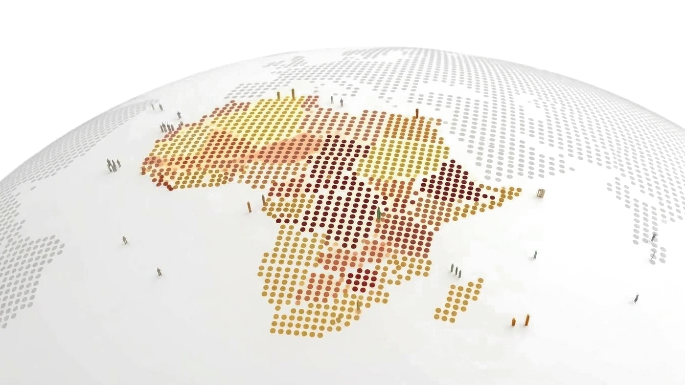
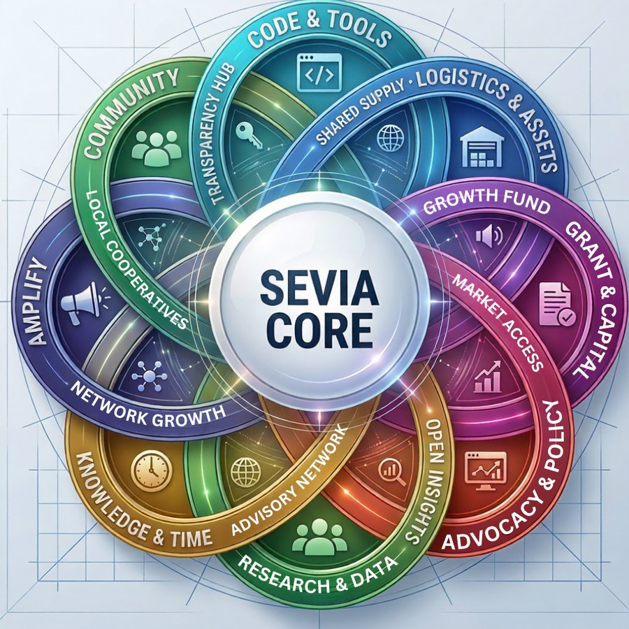

When Systems Fail.
Women Build Resilience.
We Build Infrastructure.
Sevia Africa connects women building across Africa with the knowledge, people, tools, partnerships, and opportunities to build greater economic resilience.
The Sevia Infrastructure
Every contribution strengthens the network.
One person may teach. Another may translate. Another may build a tool. Another may connect a community to an opportunity.
When these contributions connect, they become something bigger than anything one person could build alone.

Grounded in Principles • Built by Community • Beyond Hierarchies
Human-Centered
We build around the realities, needs, safety, dignity, and potential of the women doing the work.
Shared Ownership
Every person brings something unique. When those contributions come together, they create knowledge, resources, and solutions that can be shared.
Leadership That Multiplies
When people share what they know, create together, and open doors for others, new opportunities emerge, innovation grows, and leadership multiplies.
When Contributions Connect, Infrastructure Grows.
Different forms of contribution strengthen different parts of the network, creating pathways for knowledge, resources, opportunities, and collective action to move between communities.
You don't have to be a leader to help build Sevia. Contribute what you already know. Every contribution added to the Sevia ecosystem strengthens the entire network.

Build Once. Let Knowledge Travel.
Sovereign infrastructure must be built together, not handed down. True resilience means building systems that depend on no single group, founder, or organization — no single point of failure, including Sevia.
We aren't building an ecosystem that relies on Sevia; we are laying down shared, open foundations designed to outlive us.
Open Knowledge
Playbooks, research, and technical guides rendered freely available.
Open Contribution
Granular pathways for anyone to build one piece of the puzzle.
Open Collaboration
Permissionless cross-border alignment for African women leaders.
Shared Infrastructure
Modular building blocks designed so Sevia's work travels further than Sevia alone.
We build public goods, shaped, sustained, and owned by the communities that rely on them.
Trust, Safety & Protection
Built for Different Realities. Engineered for Security. Designed for Continuity.
Not every woman can participate in the same way. Sevia is designed to support participation while respecting different levels of privacy, visibility, and risk.
Public Participation
For contributors who can safely participate publicly, Sevia can provide recognition, connections, collaboration, and opportunities.
Limited Visibility
For contributors who prefer to build within verified networks without public exposure, participation is acknowledged internally while keeping external identity strictly private.
Protected Participation
For contributors operating in more sensitive environments, participation can be designed around privacy, pseudonymous identity, limited attribution, trusted relationships, and strict operational security.
Visibility should never be a requirement for participation.
Early Contributors
Honoring those who build and sustain our infrastructure.
Sena Ami
Building Sevia's Core Infrastructure
Lazolia Buzuzi
Building the Knowledge Layer
Euphemia Naa
Shaping Sevia's Digital Infrastructure
Kristie Immanuel
Growing Women-Led Communities
Sena Ami
Building Sevia's Core Infrastructure
Lazolia Buzuzi
Building the Knowledge Layer
Euphemia Naa
Shaping Sevia's Digital Infrastructure
Kristie Immanuel
Growing Women-Led Communities
What Would Be Possible
If More Women Leaders Had the Infrastructure
to Reach Their Full Potential?
The Future Is Here. We Are Building It.
There is a place for what you know.
What will you contribute?